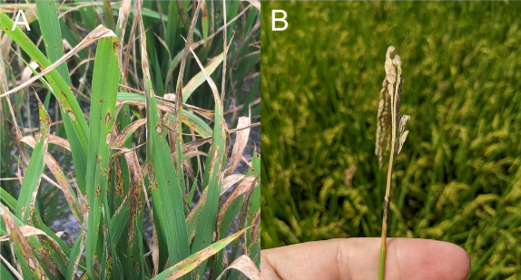
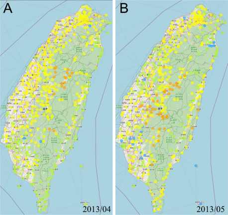
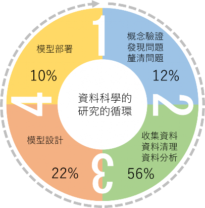
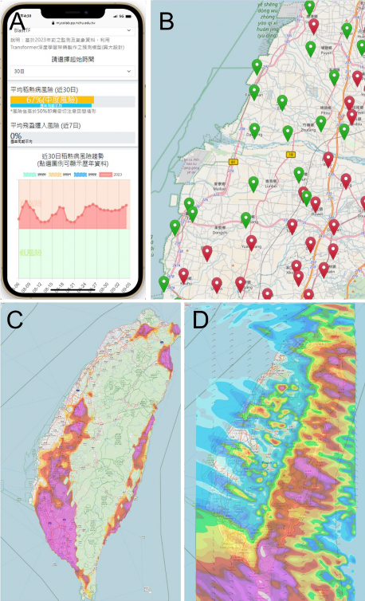
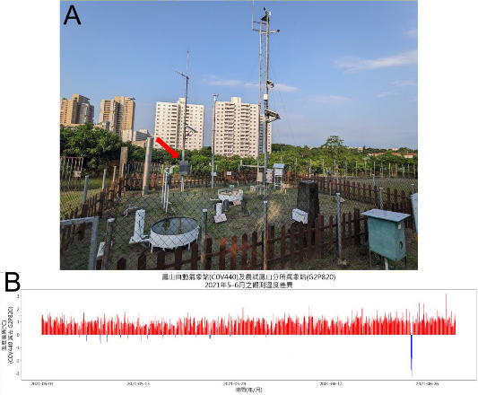

歐玠皜、李敏惠、陳啟予 國立中興大學植物病理學系
稻米作為臺灣人民主食之一，是臺灣栽培面積最廣泛的作物。然而，長期的大規模種植與有限的品種多樣性，導致各種病蟲害在水稻田中迅速蔓延。近年來，常見的水稻病蟲害包括紋枯病、白葉枯病、飛蝨等。其中，稻熱病為對水稻影響最為嚴重且破壞性最大的病害之一。
稻熱病是由真菌界的稻熱病菌（Pyricularia oryzae）感染所引起。稻熱病菌具有高度的病原性，僅需兩週就能夠完成生活史，且能夠感染水稻的各個部位。當感染發生於葉片時，被稱為「葉稻熱病」；當感染發生於穀粒、穗頸或是枝梗時，則被稱為「穗稻熱病」（圖 3-1）。前者會影響植株的光合作用，進而抑制水稻的生長勢，且常自下位葉向上蔓延，因此不易被察覺；後者則會直接導致罹病的稻穗不結實，進而造成嚴重的產量損失。稻熱病悄然蔓延的特性，使得農民在注意到疫情發生時，往往為時已晚。
儘管稻熱病看似難以捉摸，但其實它的發生還是有跡可循的。植物病害的發生，必須同時具備三個要素，分別是「感病的寄主」、「具致病力的病原菌」，以及「適宜的環境」，即所謂的「病害三角」（disease triangle）。
以水稻與稻熱病的關係而言，儘管全世界的育種學家不斷地研發出各式各樣 的抗稻熱病品種。然而，由於抗病品種的農藝特性未必能夠完全滿足生產者的需求，在利潤的考量下，生產者更傾向採用高產卻感病的品種。且稻熱病菌變異速度驚人，加之部分生產者追求產量而偏好施氮肥的栽培習慣，使得這些辛苦育成的抗病品 種，往往僅在推廣之初還能夠發揮其抗病特性，爾後的短短數年內，便會失去其應有的抗病能力。因此在田間，幾乎可以視為大部分的水稻都是「感病的寄主」，而
「具致病力的病原菌」也隨時存在。這使稻熱病在田間實務上成為相當棘手的病害。最終，在現今慣行栽培手段中，只得以殺菌劑抑制田間稻熱病族群，作為控制稻熱病蔓延的唯一手段。
因此，研究者漸漸將目光投向病害三角的最後一個要素——「適宜的環境」。在 20 世紀初期，學界就已經注意到，只有當氣溫高於 15 度時，且植物表面有水膜存在時，附著於稻株的稻熱病孢子才能夠趁勢發芽並入侵植物（越水, 1988）。由
此可知，環境的高溫、高濕、連續降雨有利於稻熱病的發生。氣象觀測資料中與其對應的氣溫、相對濕度、降雨量，也自然地在後續稻熱病流行病學研究中扮演舉足輕重的角色。
儘管透過使用殺菌劑，生產者可以將稻熱病抑制在經濟危害水平之下，但隨著社會對環境保護的重視日增，眾多研究者和生產者正尋求方法讓殺菌劑的施用更 為精確和有效率。這不僅有助於提高防治效果，更能減少非必要的農藥使用量，確保水稻栽培對環境的影響降到最低。然而，俗話說農民是「看天吃飯」，天氣是我們最難掌控的變因。雖然現代科技進步，但人類仍無法完全控制或預測自然界的天氣變化。但我們可以透過深入瞭解稻熱病的發病適宜條件並結合氣象預報，為生產者提供及時的預警。當預見到稻熱病即將發生，我們可以及早採取必要的防治措施，從而提高防治功效。特別是隨著氣候變遷，使得許多地區的氣候特徵與以往大相逕 庭。僅依靠生產者的傳統經驗或舊有的施藥時程，可能難以達到預期的防治效果。 以 2013 年為例，嘉義地區在該年的 3-4 月間明顯地較往年高濕多雨（圖 3-2），降雨日數高達 25 天，顯著超過了氣候平均值的 15 天。在這種異常潮濕的環境下，由於生產者未能及時調整防治策略，導致該年出現了前所未有的稻熱病疫情，並迫使政府首次將稻熱病視為天然災害給予補助（蔡, 2020）。鑒於這樣的情境在未來仍將不斷發生，因此目前已經有多個稻熱病預測模型被研發出來。希望能夠透過預測模型協助生產者以更科學和客觀的方法應對氣候的不確定性，並確保水稻生產的永 續和韌性。
目前，大多數的稻熱病預測模型是使用氣象觀測資料（如：氣溫、降雨量、相對濕度、日照等等）作為輸入資料。少部分會同時納入孢子採集器、葉面濕度計等感測器之量測結果（Katsantonis 等, 2017）。輸出則是一段時間內受到稻熱病菌感染的風險值，又或是量化的罹病嚴重度。其中最具代表性的是由日本學者越水幸男開發的 BLASTAM 系統（越水, 1988）。此系統至今仍廣泛地被日本各縣市的病蟲害防治單位使用。 BLASTAM 是基於一地的降雨、風速、日照時長來計算葉面的濕潤時長。接著透過均溫，評估稻熱病孢子是否能夠在葉面濕潤的時間內，成功入侵水稻。 BLASTAM 的獨特之處在於，模型中所有的參數，皆是考量稻熱病生活史後，反覆實際試驗取得。例如：孢子在特定溫度所需的入侵時間、孢子在時雨量大於 4 mm 時會被沖落而無法成功感染、風速大於 3 m/s 時會導致葉面水膜消散等等。此類基於病害發展的理論與因果關係所開發的模型又被稱為動力模型（mechanistic model）。此類模型具有可解釋性高、立論基礎明確的優點。但相應的，許多過於複雜的自然機制事實上難以被有效參數化。例如孢子附著於葉表的機制，或是葉片蒸散作用對冠層內微氣候的影響等等。面對這些難題，模型開發者往往不得不刻意的簡化參數，進而衍生誤差導致模型可靠性下降。
而在 2000 年後，由於電腦計算能力與資料儲存設備的進步，使得統計模型
（statistical model）開始蓬勃發展。統計模型不再像動力模型那樣強調因果關係，而是專注於發掘大量觀測值之間的相關性。舉例來說，冬季時，當彭佳嶼測站的溫度突然降低，數小時後，臺北測站也會出現相同的溫度下降現象。換句話說，在冬季時，我們可以基於彭佳嶼測站來「預測」臺北測站數小時後的溫度波動。然而，這種變化並非因果關係，而是冬季冷鋒由北往南推進的結果。統計模型的邏輯即是建立在這種相關性之上。這些模型利用大量的歷史數據和實際觀察，以尋找數據中潛在的關聯和趨勢，進而執行預測。這樣的模型可以巧妙地免於處理複雜的自然機制和多變的環境因素，因此具有更高的靈活性。近年備受矚目的的機器學習技術，以及維度更高的深度學習方法都是屬於這一類模型的範疇。然而，此類模型的缺點也顯而易見，包含需花費長時間收集大量的資料、模型內部邏輯的可解釋性低，尤其令人擔憂的是，這些模型的泛化（generalization）能力經常受到質疑。泛化指的是模型對於不同情境或未曾接觸過的數據的適應能力。這種適應能力常因為地理、氣候、文化等多種背景因素而有所限制，例如前述的彭佳嶼與臺北的例子就無法應用到其他國家上。
因此，動力模型與統計模型各具優勢，彼此間並無明顯的優劣之分。也有許多領域會利用多模型系集預報（multimodel ensemble）來整合多種模型，以充分發揮各模型的優點並互補不足。
不論是統計模型或是動力模型，迄今全世界已開發出超過六十個稻熱病預測模型。然而相當令人惋惜的是，如同日本的 BLASTAM 能夠被投入實際應用的，卻不到十個（Katsantonis 等, 2017）。由此可知，儘管近年人工智慧、模型開發的領域有長足的進展，但在將這些模型實用化的途中，仍然面臨諸多挑戰。歸咎原因，模型實用化的過程中常碰到以下數點阻礙：
資料的代表性和品質在模型的開發中扮演著至關重要的角色。許多模型開發過程中，往往低估了資料蒐集所需的時間與人力。據統計，典型的模型開發過程中，有超過半數的時間是投入在收集及整理相關資料上，而模型設計則僅佔兩成（圖 3- 3）。遺憾的是，許多研究過度專注於模型技術的細節，而忽略了資料品質的根本重要性。匆匆數年就急於建立模型，導致模型僅適用於實驗室內部的測試，而無法真正投入田間實際應用（Barbedo, 2021）。
模型的泛化能力是指其對於不同於開發時所使用資料特性的新資料的適應能力。許多模型儘管在最初的試驗場域中表現良好，但實際應用於其他場域時，其準確率常明顯下降。這個問題通常源於模型開發初期的試驗場域過於單一，未能涵蓋
多樣化的耕作方式、品種和氣候條件，導致模型僅能在特定條件下使用，限制了其後續的推廣和應用。例如，日本東北農業試驗場開發的 BLASTAM 根據日本東北的氣候條件設計了降雨、風速、日照與葉片濕潤時長的關係式。但在其他地區的氣候條件下，此關係式卻不一定能夠適用，因此使模型應用到其他地區時仍需要進行額外的修改和調整（Takeda, 1990）。
氣象資訊是預測稻熱病的關鍵參數之一。然而，遺憾的是，不是所有地區都有像日本的 AMeDAS 或臺灣的 CODiS 這樣的完善氣象觀測資料庫。在缺乏穩定且準確的氣象資料的狀況下，常常需要依賴遙遠的氣象站取得之觀測數值，並進行空間的內插來取得該地點的氣象資料。這個內插過程中產生的誤差，可能會使得模型的預測準確率大打折扣（Kang 等, 2010）。
為了提升預測精準度，某些模型會仰賴特定的感測技術，例如多（高）光譜攝影、空拍機、孢子收集器、微型氣象站等。然而，這些儀器常不具有統一規格且不易取得。這使得在這類模型推廣時，不同的生產者被迫使用不同廠牌的感測儀器。而不同廠牌的感測儀器間的觀測結果又常會有顯著的不同。以專業氣象單位使用的地面氣象站為例，哪怕是微小的差異，例如感測器的百葉箱（stevenson screen）結構或外表塗層略有改變，都可能造成溫度的感測數值有 2-3 度的差距（Aoshima等, 2010），更不用說那些由民間自行設計，未經妥善比較試驗的微型氣象站了。另外，如果這些儀器的價格過高，或需要專業證照才能操作，對於水稻這樣利潤較低的作物，光是初期投資成本就會讓許多生產者望而卻步（ Biloni 等, 2006 ; Katsantonis 等, 2017）。
資料科學的研究中所投入的時間，模型部署雖然只佔最少的一成（圖 3-3），但其重要性卻不容小覷。事實上，這也成為了許多研究中難以跨越的最後一道門檻。模型部署不僅要確保模型預測所需的各式輸入資料能透過各種平台即時整合，還需深入探討整體運算過程中的時間耗費。假定原始的模型或許能夠預測到三天後的發病情形，但實際操作中的各式延遲—從取得氣象資料到操作孢子收集器或空拍機—都必須考量在內。此外，電腦處理運算的時間也不能被忽略，只有確切了解整個流程的時間成本後，我們才能得知實際可供利用的預測時間有多少。
當我們獲得這些預測結果後，下一步就是將這些數據轉化成直觀的視覺化資訊，並根據目標使用者的實際需求去設計一套合適的使用者介面，同時持續強化使用者體驗（UI/UX）。這不僅可以讓使用者更直觀地理解預測結果，還能獲得他們寶貴的回饋，驗證模型的正確性，為未來的模型修正提供參考，從而形成資料科學
的正向迴路（Magarey 等, 2002）。值得注意的是，這一系列的資料串接與介面設計在資訊科學領域是一大挑戰。然而目前多數研究計畫尚未將這部分納為重要環節，結果往往是由模型的設計師來兼任部署工作，這樣的模式導致部署成果品質低落，也突顯出專業模型部署人才的迫切需求。
為了打造一個適合全臺灣各地的稻熱病預警系統，各區農業改良場、嘉義大學、及中興大學所組成的水稻病害工作團隊，從 2013 年開始，在農業部動植物防疫檢疫署及國家科學及技術委員會的經費支持下，開始進行開發工作。過程中，團隊針對過去其他模型開發過程中所遭遇的困境，擬定了相應的解決策略。例如儘管微氣候測站更能準確反映實際田間環境，然而考量到未來易推廣性及目前對於微氣候 觀測站的品質疑慮，我們決定暫不採用微氣候測站資料。而是如同 BLASTAM 使 用政府維護的氣象觀測網。而氣象觀測站與實際田間的環境落差則由模型內化。除了自行研發的預測模型外，團隊也嘗試導入日本的 BLASTAM 模型至預警系統中，並與臺灣中央氣象署的 CODiS 觀測系統結合，利用臺灣的調查資料進行驗證，目 的是探究不同地理區域所開發的模型，是否能夠在臺灣得到實際應用。
我們希望透過分享本團隊於開發稻熱病預警系統的經驗，能對其他致力於將人工智慧技術應用於農業的團隊提供有益的參考與借鑒。
為了開發一個可靠的稻熱病預測模型，取得高品質且具有代表性的資料是至關重要且極具挑戰性的首要步驟。因此，自 2013 年起，水稻病害工作團隊在稻熱病好發的一期作中，每週進行系統性的調查。所有參與監測的人員都接受過嚴格的專業訓練，能夠在水稻田間錯綜複雜的環境中，依據一致的取樣方式，調查稻熱病的罹病面積率，且要能夠準確地與胡麻葉枯病、蟲食痕、藥害等常與稻熱病混淆的病徵區別開來。此外，藉由各改良場的地理位置優勢，我們設立了多達 50 處試驗田，且遍布全台各地，目的是收集不同品種、栽培模式、和氣候條件下的稻熱病流行病學第一手資料。
截至 2022 年止，團隊累積的調查資料已有一萬餘筆。在排除了一些相鄰的試
驗田和高度重複的調查資料後，篩選出的具有代表性的資料約有 2200 筆。由於本模型主要著重於預測稻熱病病情的變動，因此從上述資料中再進一步篩選出約 1000 筆具有代表性的資料。這些資料能夠反映該時段的氣候條件是否適合稻熱病病情的發展。
隨後，為了找出與每一筆調查資料對應的氣象觀測資料，我們整合了中央
氣象署的 CODiS 資料庫和農業部的農業氣象觀測網監測系統，將全臺灣所有氣象觀測站自建站以來的觀測資料彙整成 CSV 檔案，並透過開放的 GitHub 資料庫的 GitHub Actions 功能自動每日更新，讓所有人可以隨時自由取得
（https://github.com/Raingel/historical_weather）。
接下來，我們根據每一筆調查資料的時間和地點，將周邊 5 公里內、調查日前
30 天的氣象觀測資料下載建檔。如果資料中有缺失，且缺失不連續超過 6 小時，則我們會使用三次仿樣內插法（cubic-spline interpolation）來補上遺失的資料，若資料中有連續 6 小時以上的缺失，則此筆氣象資料會被捨棄。如果最後無法取得符合標準的氣象資料，則該筆調查資料會被剔除。值得一提的是，由於臺灣具有全球最密集的氣象觀測網，因此最終只有不到 1% 的調查資料因為缺乏氣象觀測資料而被捨棄。
接下來，為了確定每次調查中，觀察到的稻熱病病情加重（或未加重）與氣象資料之間的關聯性，我們選擇了深度學習中的門閘遞迴神經網路（GRU）作為建模的核心架構。這個架構已經成功被應用在許多時空連續性資料的分析，除了植物流行病學的模擬外，也常被用於交通流量、物價波動、人口增長等領域的預測。
在建置深度學習模型的過程中，需要持續調整神經元內的權重，而這個過程具有高度的時間複雜度，需要耗費大量的電腦運算資源。使用一般家用電腦進行訓練會遭遇許多運算效能上的瓶頸。為了克服這個問題，我們採用了 Google 的 Colab平台。該平台提供免費的高速運算 GPU ，供研究人員使用，進一步降低研究過程中伺服器維護的成本。
經過多次的嘗試和調整，我們最終成功地開發出了 BlastGRU-TW 模型（Ou等, 2023）。根據特徵分析的結果，我們發現調查日前 4-24 天的日高溫、日均溫、日低溫、日降雨量、日均相對濕度、風向量（Wv, Wu）這 7 個特徵具有最高的特徵重要性。而其中，日降雨量和日均溫的特徵重要性最為顯著。而基於分割的測試資料集對模型的驗證結果顯示， BlastGRU-TW 模型的準確率可達 87.3%，相關係數為 0.74。
如同前言所述，模型部署是模型開發的最終階段，這個階段往往決定了模型的成敗。只有當模型成功轉化為實際產品時，才能被使用者所用，進而透過使用者的回饋，不斷精進模型，形成一個正向的資料科學循環（圖 3-3）。
模型部署的第一步從串接資料流開始。也就是確保所有必要的輸入資料能夠正確地串連到伺服器的模型上。 BlastGRU-TW 模型中，所有必需的資料都來自於現存的氣象觀測網。因此，我們採用了模型開發階段所設計的臺灣歷史天氣觀測資料庫。 BlastGRU-TW 模型的設計上，使其能夠預測 5 天後的稻熱病發病情況。然
而，受限於氣象單位的作業延遲，每日的氣象觀測資料需要延遲到次日中午才能夠取得，這使得實際的預測效能減少了一天。為了彌補這一不足，我們納入了中央氣象署所開發的 3 公里網格 WRF 區域模式預報，此模式可以提供約 3.5 天的未來天氣預報。扣除資料處理所需的時間後，我們可以將預測效能再延長 3 天。因此，
最終，在部署的模型中，我們能夠預測 7 天後的稻熱病發病情形。
當模型順利在伺服器上運作後，接下來的步驟是進行模型預測結果的視覺化。而視覺化的成果需要以使用者介面進行傳遞，可以利用的選項包括手機 app 、社群軟體、網頁等多種媒介。考量到現代社會中大多數人都持有智慧型手機以及跨平台 的 適 應 性 ， 我 們 設 立 了 「 稻 熱 病 疫 情 資 訊 網 」（ 圖 3-4 ； http://mycolab.pp.nchu.edu.tw/blast_forecast/），以網站作為傳播的主要媒介。
在網頁上，我們主要使用 PHP 、 Javascript 、 HTML ，並結合 OpenStreetMap及 Leaflet 等 GIS 套件來設計出能夠對應手機、平板、電腦的前端頁面，而後端有關模型及視覺化的運算則使用 Python 進行處理。根據我們與生產者合作的實際經驗，多數生產者不擅長使用選單和資訊過於複雜的頁面，他們反而偏好於直截了當、只包含所需資訊的介面。因此我們在首頁設計了一個一頁式的農民版介面（圖 3-4 A），這個介面包括了利用手機定位來搜尋最近的氣象站的功能，並根據選定的位置，展示近日稻熱病的風險值、飛蝨遷入的風險值（未在本文中詳述）以及歷年稻熱病的風險值變化。最後，介面會展示未來幾天的溫度、濕度、風速預報，以供農民作為施藥排程的參考。
而在網頁的其他部分，我們提供了 GIS 地圖圖層，呈現全臺灣的稻熱病風險分布情況（圖 3-4 B、C）。這可以幫助研究人員迅速找到稻熱病肇始的區域，並及
時提醒該區生產者，配合近 3 日的風雨預報安排施藥時程（圖 3-4 D），以阻止稻熱病持續往鄰近區域蔓延。我們也利用計畫內開發的臺灣歷史氣象觀測資料庫，將目前的溫度、濕度、雨量與歷史氣候平均的差距呈現在地圖上。這能夠讓使用者了解目前是否處在氣候上的異常年份，因而需要特別關注與警覺（圖 3-2）。
稻熱病疫情資訊網在 2022 年上線以來，已吸引超過 3000 位使用者，2 萬多次的瀏覽次數。我們的介面已依據使用者回饋做了數次調整。
在 2022 年末，我們根據了當年一期作的稻熱病監測資料進行模型的實地驗證。結果顯示， BlastGRU-TW 之準確率（accuracy）為 71.2%、靈敏度（sensitivity）為 85.9%，準確率明顯低於內部交叉驗證時的 87.3%。而在西半部的準確率（72%）也略高於東半部（67%），顯示模型對於東半部的稻熱病疫情預測能力較西半部差，現階段模型仍需要後續微調。
我們引入的日本 BLASTAM 模型，在臺灣的準確率則僅有 51%、靈敏度為 3%。顯見 BLASTAM 的模型應用在臺灣時可能有泛化上的問題。尤其是當我們深入研究模型的計算過程後，發現問題可能出在 BLASTAM 將降雨視為導致稻熱病發生
的必須因子。在團隊一期作的調查結果中，有超過九成的稻熱病發生前兩週並未伴隨降雨。也就是在臺灣，降雨並非一期作稻熱病發生的必須條件。推測可能是因為臺灣春季常有平流霧產生，再加上水稻田本身處於高濕的環境，使得即便沒有降雨的狀況下，稻株表面凝結的露水也會自然形成水膜，讓稻熱病菌得以趁勢成功入侵。這凸顯了模型開發後的實地部署與驗證的重要性，因為驗證過程能夠幫助研究者 找出在開發當時所遺漏的細節。特別是在氣候變遷的影響下，未來的水稻栽培可能面臨與過去截然不同的氣候特徵。因此，精進稻熱病預測模型的工作將不會停止。 團隊中的所有研究人員會持續不懈地在每一年度調查各地的稻熱病疫情變動情形，以持續驗證並改善模型的準確率和可靠性。
臺灣是全世界氣象觀測站密度最高的國家。光是中央氣象署就架設了多達 650
個氣象站，再加上農業部主導的 60 多個農業氣象站，使得臺灣的平均氣象站密度
高達每 8 公里一座。受益於此，我們分析資料的過程中，僅有 1% 的調查資料因找不到鄰近的氣象觀測站而被捨去。但即便如此，我們仍在開發稻熱病預警系統的過程中，面臨著一些氣象觀測上的挑戰。
首先，是氣象測站的分布不均問題。由於架設氣象觀測站需要安全寬闊的場地，所以場址一般會選定在消防隊、警察局、政府機關、公立校園等通訊、電力穩定， 且隨時有人值守之處。這導致西部平地的氣象站密度遠高於東部和山區。且許多東部的氣象站為僅觀測降雨量的雨量站，使得可用的氣象站的密度更顯得不足。以花蓮區農業改良場在花蓮縣玉里鎮三民里設置的試驗田為例，該試驗田海拔大約是 80 公尺，而其周邊 5 公里內，有高寮、立山兩個氣象觀測站。然而，這兩個氣象 站為雨量站，僅觀測雨量，並不能滿足稻熱病預測的需求。再者，即使立山氣象站 與試驗田的直線距離僅約 3 公里，但該站的海拔卻高達 430 公尺，東部劇烈的地貌變化使看似鄰近的氣象站並無法代表試驗田的氣象環境。這樣的情況也出現在 西部的美濃、名間等較靠山區的水稻栽培區。這可能是導致我們在模型驗證過程時，東部預測準確率偏低的原因之一。因此，未來需要針對水稻主要產區，與中央氣象署商討增設或升級氣象觀測站的可能性。
其次，是測站資料的不均質（inhomogeneity）問題。隨著各式感測器技術的進步，感測器本身的一致性、穩定性、再現性都已經有非常顯著的提升。許多研究者因而認為感測器數據可以精確地反映環境特性。然而，這種觀點實際上並不正確。在實際觀測過程中，影響資料品質的遠不僅僅是感測器本身造成的錯誤（error）。正如一、（四）、4.所提，小至百葉箱塗層，乃至測站周圍的植被變化、操作人員的異動以及資料的後處理等，都會影響觀測的結果。邱等人（2005）對全台灣所有中
央氣象局及非中央氣象局所設立的氣象站（合作站）進行的檢定研究中，就明確指出不同單位所管理的氣象站之間，可能普遍有觀測資料的不均質情況。以高雄鳳山熱帶園藝試驗分所內的氣象站為例，中央氣象署與農業部分別在該所內同一片草坪設置了鳳山自動氣象站（C0V440）及農試鳳山分所氣象站（G2P820）（圖 3-5 A）。但在 2021 年的資料中，兩者觀測的氣溫差距最大達到 3.2 ºC，全年平均溫度差距則達到 0.94 ºC（圖 3-5 B）。這使得我們的 BlastGRU-TW 模型利用這兩個處在同一位置的氣象站所提供的氣象資料，所預測的稻熱病高風險日數卻相差了 23 天。需要再次強調的是，這絕不必然代表著這兩個測站的感測器發生故障。相反地，這兩個測站在觀測目的、觀測設備以及架設方式都有所不同，這可能才是導致觀測差異的主要原因。因此，在未來，若需要引入不同單位，乃至生產者自行架設的氣象站作為輸入資料，都必須進行嚴謹的比較性試驗，以確保資料的均質性。此外，近期有多種網格再分析資料，是利用動力或統計公式，整合各種來源的觀測資料，使其在空間及時間上均質化。例如由歐洲中期天氣預報中心（ECMWF）所產製的 ERA5-Land ，或臺灣 NCDR 主導之 TCCIP 計畫所產製的 TReAD（Taiwan ReAnalysis Downscaling data），以及「網格化觀測資料」等等。這些資料也都具有極大的潛力，能夠引入稻熱病預警系統中，用來彌補觀測資料品質的不足。
目前的稻熱病預警模型，在田間實務應用上仍有數個不足之處。
首先，用於建立 BlastGRU-TW 模型的資料僅涵蓋「葉稻熱病」的監測資料，並不包含由另一種不同的感染機制所引起的「穗稻熱病」（圖 3-1 B）。根據前人的研究，穗稻熱病與葉稻熱病的流行病發展過程有顯著不同（Ishiguro & Hashimoto, 1989; Teng 等, 1991）。在我們 2022 年於台中市霧峰監測田的調查中，也發現即使栽培過程中，葉稻熱病罹病面積率從未超過 1%，受稻熱病感染的稻穗比率卻在抽穗後的僅僅兩週內快速攀升至 15%，從而導致大量稻穗白化。這代表兩種病害儘管是由同一個病原菌感染所引起，但卻無法共用同一種預測模型。因此，未來需要針對穗稻熱病進行個別的建模，才得以滿足田間稻熱病管理需求。
第二，在臺灣，水稻栽培主要分為春季插秧、夏季收割的一期稻作，以及夏季插秧、秋冬季收割的二期稻作。由於二期稻作的栽培時期溫度較高，且正值臺灣中南部的乾季，一般來說稻熱病發生情形會較一期作輕微，然而近年依然有零星地區在二期稻作發生了嚴重的稻熱病。儘管我們曾嘗試使用專為一期稻作開發的 BlastGRU-TW 模型來預測二期稻作的稻熱病情況，但模型卻未能準確預測出二期作的稻熱病發病情況（相關係數-0.104），這也突顯了統計模型普遍泛化能力不足的缺陷。為此，從 2022 年開始，水稻病害工作團隊已納入二期稻作的稻熱病監測，期望未來能發展適用於二期稻作的稻熱病預測模型。
第三，目前模型的預測僅限於預測一段時間的氣象因子是否符合稻熱病發生的條件，卻無法精準預測其發生的嚴重程度。這樣的侷限性主要是因為稻熱病的嚴
重程度受眾多因素影響，例如生產者的施肥、施藥方式、秧苗密度、插秧時機、稻米品種等。現階段要將所有這些影響因素整合到模型中，仍具有一定的難度。因此目前的預警系統主要仍是扮演著決策輔助系統（DSS, Decision Support Systems）的角色，旨在為生產者提供全面而客觀的資訊，以協助他們作出更為精確且及時的主觀管理決策。然而我們仍然期待在未來能夠擁有更為完善和全面的資料庫，從而使預警系統能針對各種規模的生產者，甚至是特定的產銷班，提供更加客製化和精細化的預警成果。
自從人類開始種植水稻以來，稻熱病就一直是一個無法根除的夢魘。近年來 AI 引領的科技革命，包括生成式 AI 模型、影像識別技術等，不只引起全世界的矚目，也讓我們對 AI 與農業結合的前景懷抱著極大的期待。
這些 AI 科技在許多領域確實展現了驚人的潛力，然而，不可忽視的是，農學和理工科學領域在本質上有著很大的不同。農業上，收集資料的速度遠低於多數理工領域的任務，且也無法簡單地將所有輸入資料給予明確的分類標記。生態系統是多個物種與環境交互互動的結果，具有極高的不確定性，這不是一門能夠以「零與一」進行二分法的科學。在試驗設計的過程中，專業知識和投入的心力遠超一般人的想像，因此長期積累的資料和對其規律的深入研究就變得至關重要。由於 AI 模型的耀眼成就，近年來許多研究資源和注意力都集中在 AI 模型的開發上，不經意間卻忽視了基礎資料收集和分析的重要性，加上農業領域專家和 AI 研究者對彼此的領域知識相對陌生，這導致了許多智慧農業研究產出的成果與第一線農業生產者的期待有所落差，許多研究也因此未能成功轉化為實用的工具。
因此，我們深切期望在未來，跨領域的學者能夠更加緊密地合作，以確保智慧科技不僅能滿足對理論的探索，也能真正符合農業生產的實際應用需求，從而更有效地對抗稻熱病這長期困擾著全世界的問題。
本研究成果由嘉義大學、中興大學、桃園區農業改良場、苗栗區農業改良場、臺中區農業改良場、臺南區農業改良場、高雄區農業改良場、花蓮區農業改良場、臺東區農業改良場、農業部農業試驗所共同完成，並承蒙農業部動植物防疫檢疫署「整合氣候預警模式與水稻重要疫病蟲害管理」（計畫編號：110 農科-5.3.1-檢-B4、111 農科-5.3.1-檢- B3）及國科會「異質感測器人工智慧整合平台協助作物之健康預警-作物智慧型健康預警系統之建立」（計畫編號:107-2321-B-005-013-、108-2321-B-005-008-、109- 2321-B-005-024-及 MOST 110-2321-B-005-005）補助，特此致謝。
蔡馨儀。(2020)。水稻分子輔助育種技術提升抗病蟲害特性。農政與農情，
109(338), 10–13
邱清安、林博雄、謝旻耕。(2005)。臺灣地區氣象測站之詮釋資料與日氣溫、日降水量之資料檢定。氣象學報，45(3)，33–45
越水幸男。(1988)。アメダス資料による葉いもち発生予察法。東北農業試験場研究報告，78，Article 78。
Aoshima, T., Nakashima, K., Kawamura, H., Kumamoto, M., Sakai, T., Kawano, S., & Joko, M. (2010). RIC-Tsukuba (japan) intercomparison of thermometer screens/shields in 2009–2010. WMO technical conference on meteorological and environmental instruments and methods of observation, 1–19.
Barbedo, J. G. A. (2021). Deep learning applied to plant pathology: The problem of data representativeness. Tropical Plant Pathology. https://doi.org/10.1007/s40858- 021-00459-9
Barga, R., Fontama, V., & Tok, W. H. (2015). Introduction to Data Science. in R. Barga, V. Fontama, & W. H. Tok, Predictive Analytics with Microsoft Azure Machine Learning. Apress. https://doi.org/10.1007/978-1-4842-1200-4_1
Biloni, M., Rodolfi, M., & Picco, A. M. (2006). SiRBInt, a new simulation model to forecast rice blast disease. Italian Journal of Agrometeorology, 3, 58–62.
Ishiguro, K., & Hashimoto, A. (1989). Recent advances in forecasting of rice blast epidemics using computers in Japan. Tropical agriculture research series, 22, 153– 162.
Kaggle. (2018). 2018 Kaggle Machine Learning & Data Science Survey. https://www.kaggle.com/datasets/kaggle/kaggle-survey-2018. Accessed 30 Aug 2023.
10. Kang, W., Hong, S.-S., Han, Y.-K., Kim, K.-R., Kim, S.-G., & Park, E. (2010). A Web-based Information System for Plant Disease Forecast Based on Weather Data at High Spatial Resolution. The Plant Pathology Journal, 26. https://doi.org/10.5423/PPJ.2010.26.1.037
Katsantonis, D., Dramalis, C., & Puigdollers. (2017). Rice blast forecasting models and their practical value: A review. Phytopathologia Mediterranea, 56, 187–216. https://doi.org/10.14601/Phytopathol_Mediterr-18706
Magarey, R. D., Travis, J. W., Russo, J. M., Seem, R. C., & Magarey, P. A. (2002). Decision Support Systems: Quenching the Thirst. Plant Disease, 86(1), 4–14. https://doi.org/10.1094/PDIS.2002.86.1.4
Ou, J.-H., Kuo, C.-H., Wu, Y.-F., Lin, G.-C., Lee, M.-H., Chen, R.-K., Chou, H.-P., Wu, H.-Y., Chu, S.-C., Lai, Q.-J., Tsai, Y.-C., Lin, C.-C., Kuo, C.-C., Liao, C.-T., Chen, Y.-N., Chu, Y.-W., & Chen, C.-Y. (2023). Application-oriented deep learning model for early warning of rice blast in Taiwan. Ecological Informatics, 73, 101950. https://doi.org/10.1016/j.ecoinf.2022.101950
Takeda, K. (1990). The Fitness of the rice leaf blast forecasting model BLASTAM- NAGANO on occurrence of its disease in Nagano Prefecture in 1989. Proceedings of the Kanto-Tosan Plant Protection Society, 1990(37), 11–14. https://doi.org/10.11337/ktpps1954.1990.11
Teng, P. S., Klein-Gebbinck, H. W., & Pinnschmidt, H. (1991). An analysis of the blast pathosystem to guide modeling and forecasting. Rice blast modeling and forecasting. Selected papers from the International Rice Research Conference, 27- 31 August 1990, Seoul, Korea Republic., 1–30.

圖 3-1 葉稻熱病（A）及穗稻熱病（B）之病徵

圖 3-2 2013 年 4 月（A）及 5 月（B）的日均降雨量距平值
（與長期氣候平均值的差值）分布。
距平值為正值時代表該月份日均降雨量高於往年氣候平均值。淺藍色表示該測站日均降雨量距平值小於 -2 mm，
綠色表示距平值在 -2 mm 到 2 mm 之間，黃色表示距平值在 2 mm 到 10 mm 之間，橘色表示距平值大於 10 mm。

圖 3-3 資料科學研究的循環，與各階段所耗費的時間佔比
（引用 Barga 等（2015）及 Kaggle（2018）之資料印製）

圖 3-4 稻熱病疫情資訊網（ http://mycolab.pp.nchu.edu.tw/blast_forecast/）提供簡單易用的一頁式介面，讓使用者能快速獲取必要的資訊（A）。
此外，網站運用了 GIS 技術，呈現全臺灣稻熱病高風險區域的分布（B、C），使用者也可選擇是否顯示各別氣象站點，以利找出其所處田區附近的氣象站（C）。本系統也呈現了近三日的風力及降雨預報，以利生產者安排施藥時程參考（D）。

圖 3-5（A）高雄鳳山熱帶園藝試驗分所內之農試鳳山分所氣象站（G2P820）及設立於同一草坪之中央氣象屬鳳山自動氣象站（C0V440）（紅色箭頭）。
（B）兩氣象站於 5–6 月間之觀測氣溫差值。